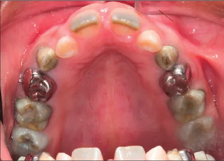

نسخه استخراجشده؛ ترجمه یا تأیید علمی انجام نشده است. وضعیت: captured
امضای مشترک: ارثی است، پس هر دو دندانی شیری و دائمی و تقریباً همهی دندانها را درگیر میکند. همین یک نکته، آن را از نقایص اکتسابی جدا میکند.
سه نوع اصلی، بر اساس اینکه کدام مرحلهی مینا مختل شده:
هیپوپلاستیک: ماتریکس کم ساخته شده ← مینا نازک با حفره و شیار. در رادیوگرافی مینا هنوز از عاج روشنتر است.
هیپومچوریشن: ضخامت طبیعی ولی نابالغ و نرم ← مینا ورقهورقه میشود. تراکم رادیوگرافیک شبیه عاج.
هیپوکلسیفاید: ضخامت طبیعی ولی معدنی شدن بسیار ناقص ← مینا سریع از بین میرود. تراکم کمتر از عاج.
کلید تفکیک در رادیوگرافی: مینا را با عاج مقایسه کن — روشنتر، هماندازه، یا تیرهتر.
هر دو لکهی سفید یا قهوهای میسازند، اما سه چیز آنها را از هم جدا میکند:
مرز ضایعه: در MIH مرز واضح و مشخص است؛ در فلوروزیس مرز مبهم و محو.
تقارن: MIH معمولاً نامتقارن و پراکنده است؛ فلوروزیس قرینه و دوطرفه.
توزیع: MIH به مولرهای اول دائمی و گاهی ثنایاها محدود است؛ فلوروزیس دندانهایی را درگیر میکند که در دورهی مواجهه در حال ساخته شدن بودهاند.
و یک نوع سوم: اگر فقط یک دندان درگیر باشد، به دندان ترنر فکر کن — نتیجهی عفونت یا ضربهی دندان شیری پیشساز.
نکتهی بالینی MIH: این دندانها بسیار حساساند و بیحس کردنشان دشوارتر است؛ برای جلسهی درمان وقت بیشتری بگذار.
